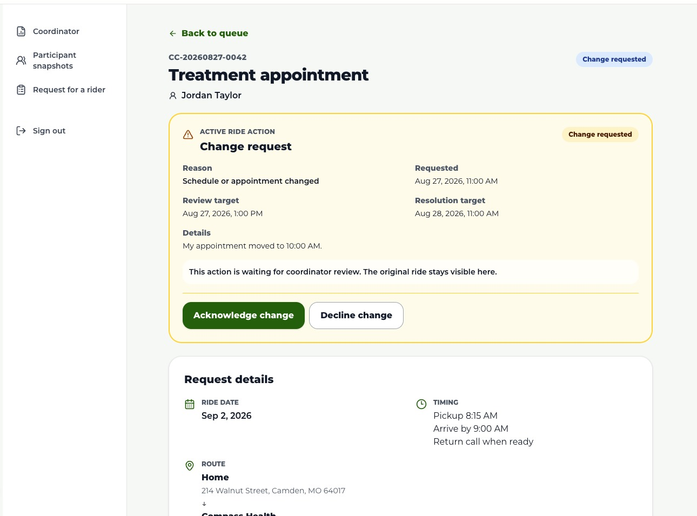
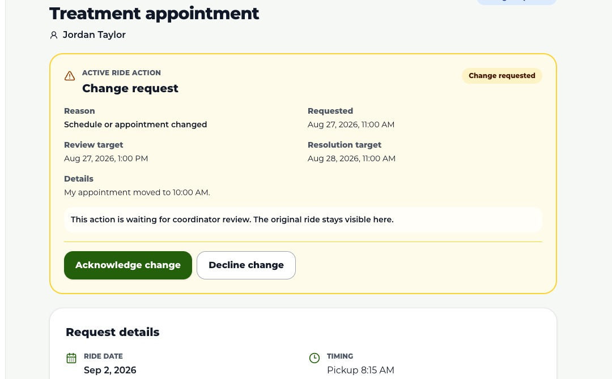
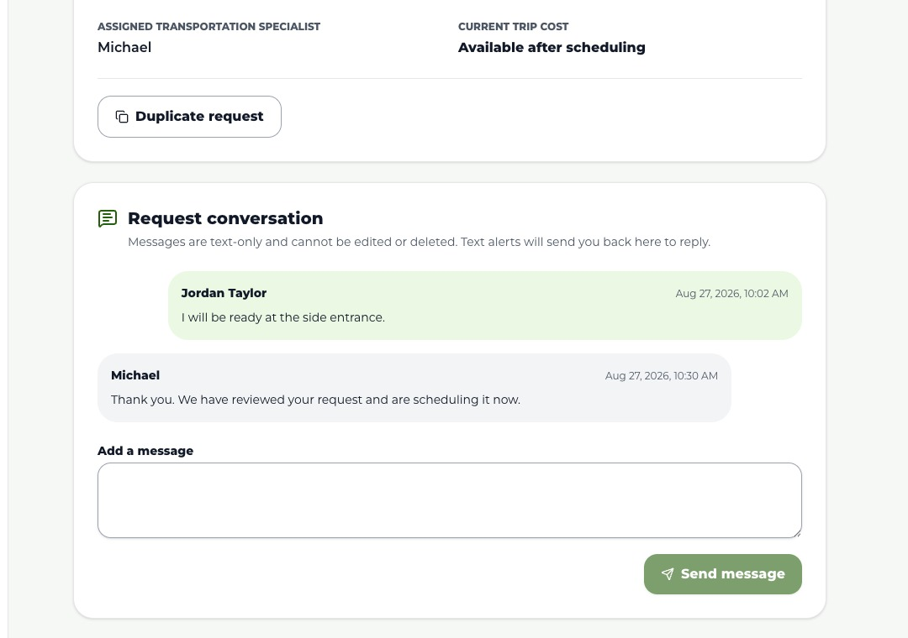
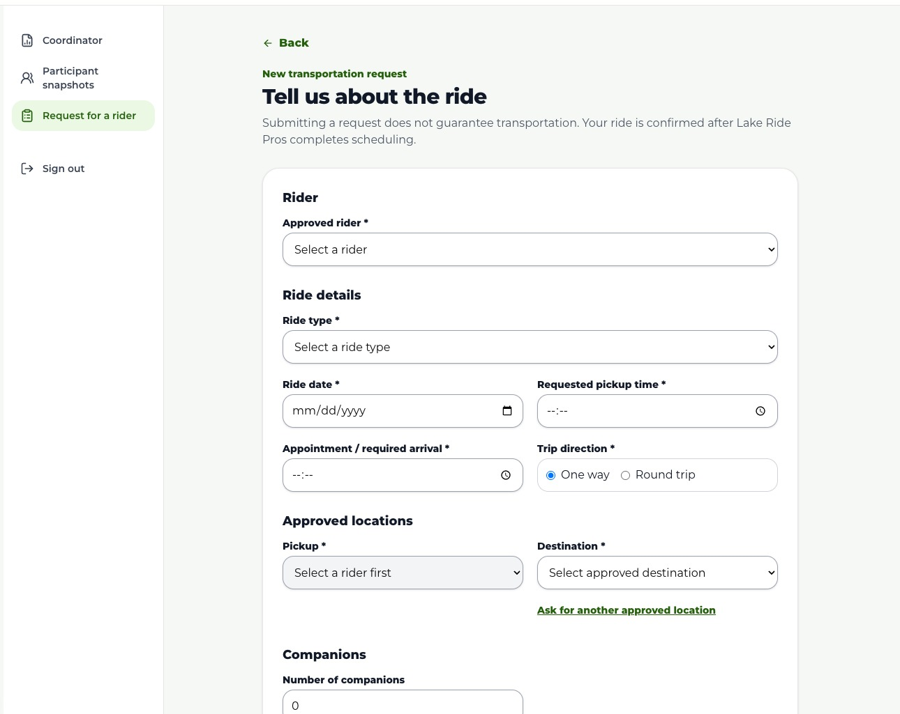
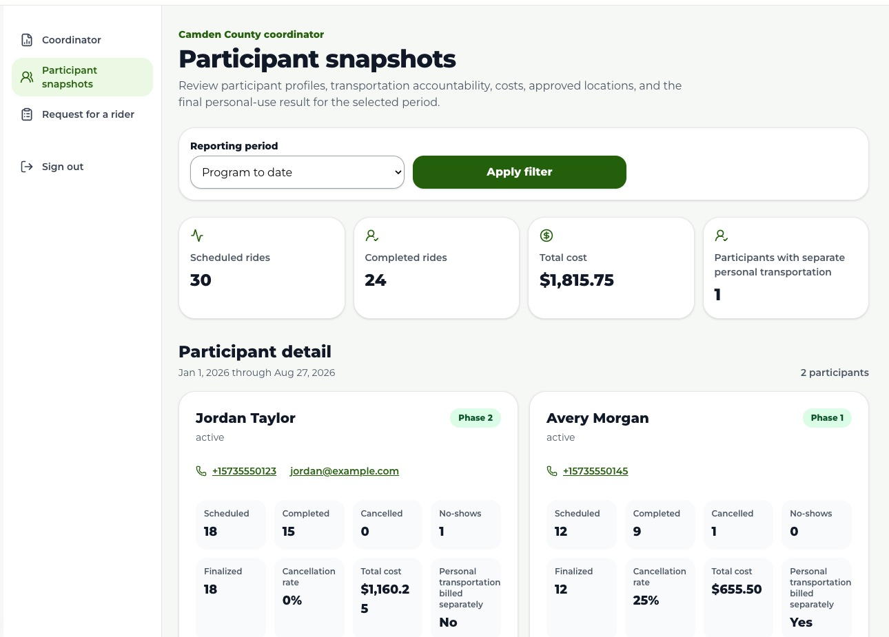

1
Read the summary
Check Pending, Needs attention, Confirmed, month-to-date, and contract-to-date totals.

Coordinator Operations Guide
A practical guide to the coordinator portal: reviewing the queue, responding to participant actions, submitting requests on behalf of participants, and monitoring program activity.
Open the coordinator portallakeridepros.com/camden-county
Updated
August 2026
Lake Ride ProsCoordinator access is approval-only. Sign in with the approved mobile number connected to your coordinator profile and the six-digit code sent by text.
 1
2
1
2
The same secure sign-in page routes approved users to the correct participant or coordinator view.
Use the number assigned to your coordinator access.
Enter the six-digit one-time code from the SMS.
Coordinator, Participant snapshots, and Request for a rider are your primary work areas.
This is especially important on any shared phone, tablet, or computer.
Role boundary: Coordinator access includes confidential participant, ride, cost, and reporting information. It does not grant access to unrelated Lake Ride Pros operations or customer records.
Lake Ride ProsThe coordinator dashboard is the daily starting point for request volume, urgent work, program spending, and the filtered request queue.
 1
2
3
1
2
3
Example screen uses sample participant, request, and cost information.
Check Pending, Needs attention, Confirmed, month-to-date, and contract-to-date totals.
Search by participant/reference or filter by request status and active action.
Select View details to review the route, timeline, messages, action history, and available next step.
Suggested priority: Needs attention → pending requests approaching their review target → active change/cancellation actions → acknowledged requests still waiting for scheduling.
Lake Ride ProsOpen the request to verify the participant, date, timing, route, notes, current status, and any prior conversation before taking action.

1 2 3Example screen. Available controls change with the request’s current status and active action.
Review the request. A coordinator may acknowledge it, request more information, or decline it.
The request has been reviewed and processing/scheduling is underway.
Add a clear participant-visible question. A participant reply becomes Information received for review.
An actual Lake Ride Pros trip has been scheduled and linked to the request.
Acknowledged is not Confirmed. Never tell a participant the ride is confirmed solely because the request was reviewed. Confirmation occurs only after Lake Ride Pros schedules and links the actual trip.
Lake Ride ProsParticipant changes and cancellations stay attached to the original ride reference. The original ride remains visible while the action is processed.

1Acknowledge an action when review begins; complete it only after the operational change is finished.
Tells the participant the action was reviewed and is now being processed.
Use after the requested change is finished. Completing a cancellation moves the ride to Cancelled.
Restores the prior ride status. Add a clear participant-visible explanation.

Conversation rules: Messages are shared with the participant, text-only, and immutable. They cannot be edited or deleted. Keep sensitive internal commentary out of the participant conversation.
Lake Ride ProsUse Request for a rider when an approved participant needs help submitting a transportation request.

1 2 3Choose the approved participant first so the correct pickup locations become available.
The portal records that the coordinator submitted on the participant’s behalf.
Ride type, date, pickup time, required-arrival time, and one-way/round-trip direction are required.
Select the participant’s approved pickup and a managed destination.
The request begins Pending and follows the same review and confirmation process.
Location not listed? Submit it for Lake Ride Pros approval. The location cannot be used until approved, and submitting the location does not guarantee transportation there.
Lake Ride ProsParticipant snapshots combine the approved profile, Treatment Court information, ride accountability, approved locations, program costs, and the final separate-personal-transportation indicator.

1 2 3Example screen uses sample participant and cost information.
Data timing: Ride activity and costs come from Lake Ride Pros trip records and may take up to 15 minutes to appear after an operational update.
Lake Ride ProsCoordinator Quick Reference
The coordinator portal manages requests and accountability. Lake Ride Pros remains the source of truth for the scheduled trip and its operational status.
lakeridepros.com/camden-county
Coordinator, Participant snapshots, and Request for a rider are your primary work areas.
Never bypass the confirmation boundary: Acknowledging a request means it was reviewed. Confirmed means an actual Lake Ride Pros trip has been scheduled and linked. A change or cancellation also remains pending until it is operationally completed.
General Lake Ride Pros help: (573) 206-9499 · contactus@lakeridepros.com. Use the portal’s configured urgent-support action for immediate ride assistance.
Screens in this guide use sample participant, trip, and cost information. Available controls may differ by request status and current program configuration.